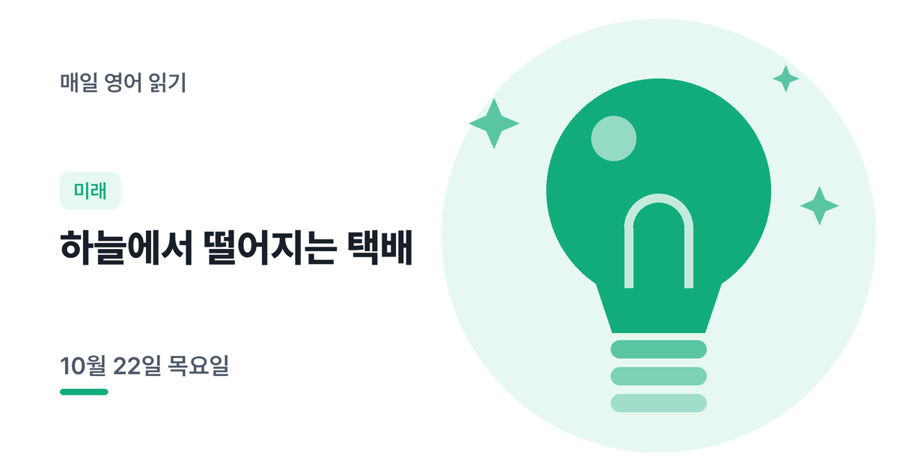

오늘은 하늘에서 떨어지는 택배 이야기예요
Packages from the Sky
매일 아침 새로 올라오는 B1~B2 영어 읽기예요. 듣고, 해석하고, AI에게 피드백을 받아 보세요. 메일로 받기다른 언어
오늘의 지문
번호를 누르면 그 문장이 들리고, 문장을 누르면 그 문장 해석만 보여요. 먼저 읽어 본 다음에 눌러 보세요.
출처: Amazon Targets Mid-November Tallahassee Drones. A Permit Is Pending (DroneXL, 2026-10-21)
지문, 내 해석, 피드백 요청이 함께 복사돼요. ChatGPT나 Claude 같은 AI 채팅에 붙여넣으면 문장별로 고쳐 줘요.
주요 단어
오늘의 체크 포인트
2번 끝 in mid-November(11월 중순에)와 if a building permit is approved in time(건축 허가가 제때 나면)이라는 조건, 3번 끝 up to five pounds(최대 5파운드)와 within seven and a half miles(7.5마일 이내), 4번 끝 in as little as thirty minutes(빠르면 30분 만에)를 끝까지 챙겨 읽어 보세요. as little as는 '겨우 ~만큼, ~밖에'라는 뜻으로, 시간이 짧다는 걸 강조해요.
5번은 the drones, which drop each package from about twelve feet above the ground,에서 쉼표 사이를 잠깐 괄호처럼 넘기고 the drones ... make a noise로 주어와 동사를 먼저 연결하세요. 뒤의 that a company manager himself compared to ...는 noise를 꾸며 '회사 관계자 스스로 ~에 비유한 소음'이에요. 모르는 단어가 몇 개 있어도 주어와 동사부터 잡으면 문장이 풀려요.
먼저 해석해보세요
모르는 단어가 나와도 문장을 버리지 말고, 아는 부분만이라도 지문 아래 '내 해석' 칸에 적어 보세요. 다 쓰면 'AI 피드백 요청문 복사'를 눌러 평소 쓰는 AI 채팅(ChatGPT, Claude 등)에 붙여넣으세요. 어디를 잘 읽었고 어디를 놓쳤는지 문장별로 알려 줘요.
오늘 단어 외우기
지문에 나온 단어 7개를 외울 때까지 반복해요. 몰랐던 단어는 다시 나와요.
약 3분 걸려요. 기록은 이 기기에만 남아요.
오늘 주제 어땠어요?
오늘은 미래 분야였어요. 눌러 주시면 앞으로 어떤 주제를 더 자주 다룰지 정하는 데 써요.
고마워요. 다음 주제를 고를 때 참고할게요. 다시 누르면 바꿀 수 있어요.
요일마다 분야가 바뀌어요
월 과학, 화 기술, 수 사회, 목 미래, 금 과학, 토 일상과 문화, 일 우주
한 단계 위 어휘선택 사항, 눈에 익혀두는 용도예요
매일 아침 영어 지문 받기
새 영어 지문이 올라오면 아침에 메일로 보내 드려요.
이미 구독 중이어도 같은 이메일로 다시 구독하면 수준과 언어가 바로 바뀌어요. 이메일 주소 하나로는 한 언어만 받을 수 있어요.
구독하면 영문 확인 메일(Confirm your subscription)이 가요. 메일 속 버튼을 눌러야 구독이 끝나요. 메일이 안 보이면 스팸함도 확인해 주세요.
이메일은 뉴스레터 발송에만 쓰이고, 언제든 메일 하단에서 수신거부할 수 있어요.